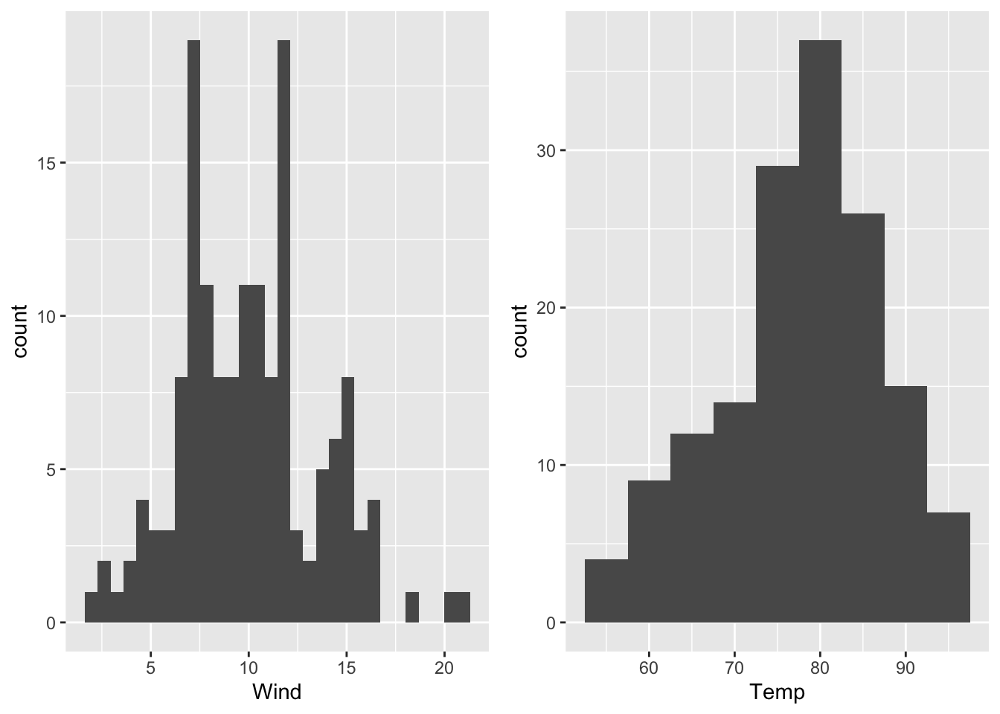

7.2 Plots with ggplot2 (Wickham 2016)
Another form of plots are ggplots which are based on the R package ggplot2 by Wickham (2016). As we will see, ggplots are especially helpful by handling multiple variables.
The name of the package indicates that the plots are based on the Grammar of Graphics. (Wickham 2016) Basically, the Grammar of Graphics is a system with strict rules that describe how statistical graphics are generated based on raw data. (Wilkinson 2010) This means, a defined syntax - which components are necessary to build a plot - and a semantic - how the components will be interpreted to create a plot on the whole - exist. (Wilkinson 2010; RStudio, PBC 2021)
We are not going into detail concerning the Grammar of Graphics; there is an own book about it, see Wilkinson (2005). We will focus on how ggplot2 realizes the Grammar of Graphics and how you can create plots with ggplot2.
As the ggplot2 Cheatsheet (RStudio, PBC 2021) introduces only a data set, a coordinate system (grid), geoms (visual points representing data points) as well as aesthetics (i.e. variables of the data set have to be mapped to properties of the geom) are necessary to create a graph as we will see. The ggplot2 Cheatsheet (RStudio, PBC 2021) as well as the manual pages of the functions of the ggplot2 package (Wickham 2016) are the basis for the creation of the following ggplots, their descriptions and further explanations.
ggplots are divided in layers which will be concatenated by a “+” sign: The first layer, which cannot be leaved out, includes the data; this is realized by ggplot() (see code below). Its first argument is the data set (here: df) followed by defining which variables will be plotted inside the aes() function. By only calling ggplot() as described, no data in form of points, lines etc. will be visible since geoms have not been defined, so far.
To overcome this, one of the geom_*() functions is called which specifies how the data will be visualized, for example by points (geom_point()), by a line (geom_line()), in form of a boxplot (geom_boxplot()), a histogram (geom_histogram()), etc.
#R> x y
#R> 1 -8.0 5.052271e-15
#R> 2 -7.9 1.118796e-14
#R> 3 -7.8 2.452855e-14
#R> 4 -7.7 5.324148e-14
#R> 5 -7.6 1.144156e-13
#R> 6 -7.5 2.434321e-13ggplot(data = df, mapping = aes(x = x, y = y))+ # initialize a ggplot object
geom_point()+ # visualize data points
ggtitle("Density function of normal distribution")+ # adding a title to the plot
xlab("x")+ # labeling the x axis
ylab("density") # labeling the y axisFigure 7.12: Density function for a normal distribution as a simple ggplot.
Furthermore, a title for the plot as well as for the x- and y-axis have been added to the plots, figures 7.12 and 7.13, by the functions ggtitle(), xlab() and ylab(), respectively, and by using the “x”-sign.
ggplot(data = airquality, aes(x = Temp, y = Wind))+ ## initialization of a ggplot object
geom_point()+ ## adding points to a plot
ggtitle("Scatterplot of temperature and wind speed")+ ## adding a title to the plot
xlab("Temperature [°F]")+ ## labeling the x axis
ylab("Wind [mph]") ## labeling the y axis
Figure 7.13: Scatterplot of wind speed vs. temperature of the airquality data set (R Core Team 2021) as a ggplot (Wickham 2016).
In the code of the plots (figures 7.12 and 7.13), the aesthetics have been defined inside ggplot(). It is also possible to define the aesthetics inside the *geom()-function. Consequently, the following options exist:
# option 1:
ggplot(data = airquality, mapping = aes(x = Temp, y = Wind))+ # initialize a ggplot object
geom_point()
# option 2:
ggplot(data = airquality)+
geom_point(mapping = aes(x = Temp, y = Wind))
# option 3:
ggplot(data = airquality, mapping = aes(x = Temp))+
geom_point(mapping = aes(y = Wind))In this example, it does not matter whether the aesthetics are defined inside ggplot() and/or in geom_point() since the resulting plot does not change. In contrast to that, when we define another variable in the geom()-function (e.g. y = Solar.R) although we have already defined a y-variable in ggplot() (e.g. y = Wind), the variable Wind will be overwritten by the variable Solar.R. The y-axis is called Wind in figure 7.14, but that is not true any longer. So, we have to adjust the labeling (see figure 7.15).
#R> Warning: Removed 7 rows containing missing values (geom_point).Figure 7.14: Figure 7.14 with labeling.
#R> Warning: Removed 7 rows containing missing values (geom_point).Figure 7.15: Figure 7.14 with labeling.
Dependent on the number of variables and their scale of measurement (discrete, continuous) the ggplot2 Cheatsheet (RStudio, PBC 2021) shows which geom()_*-function(s) to use. The stat_*()-function(s) work similarily as the geom()_*-functions (stat_*()- and geom_*()-functions are equivalents), e.g.
ggplot(data = airquality, mapping = aes(x = Temp, y = Wind))+
geom_point(stat = "identity") # stat = "identity" by default
# is equal to
ggplot(data = airquality, mapping = aes(x = Temp, y = Wind))+
stat_identity(geom = "point") # geom = "point" by defaultHere are some of the stat_*()- and geom_*()-function equivalents based on (Arnold 2020):
geom |
stat |
|---|---|
geom_bar() |
stat_count() |
geom_bin2d() |
stat_bin_2d() |
geom_boxplot() |
stat_boxplot() |
geom_contour() |
stat_contour() |
geom_count() |
stat_sum() |
geom_density() |
stat_density() |
geom_density_2d() |
stat_density_2d() |
geom_hex() |
stat_hex() |
geom_histogram() |
stat_bin() |
geom_qq_line() |
stat_qq_line() |
geom_qq() |
stat_qq() |
geom_quantile() |
stat_quantile() |
geom_smooth() |
stat_smooth() |
geom_violin() |
stat_violin() |
geom_sf() |
stat_sf() |
Based on this introduction of ggplots, we can easily reconstruct the plots we created in base-R (see chapter 7.1).
Based on this introduction of ggplots, we can easily reconstruct the plots we created in base-R (see chapter 7.1). Before we do that, it is recommended to save the variables in a data frame:
x <- seq(from = -8, to = 8, by = 0.1)
y <- dnorm(x = x)
y2 <- dnorm(x = x, mean = -1)
y3 <- dnorm(x = x, mean = 2)
nd <- data.frame(x, y, y2, y3)
head(nd)#R> x y y2 y3
#R> 1 -8.0 5.052271e-15 9.134720e-12 7.694599e-23
#R> 2 -7.9 1.118796e-14 1.830332e-11 2.081177e-22
#R> 3 -7.8 2.452855e-14 3.630962e-11 5.573000e-22
#R> 4 -7.7 5.324148e-14 7.131328e-11 1.477495e-21
#R> 5 -7.6 1.144156e-13 1.386680e-10 3.878112e-21
#R> 6 -7.5 2.434321e-13 2.669557e-10 1.007794e-20Then, the single curves are added to the ggplot by adding layers (for each curve one layer) to the plot. Here, geom_line() is used to visualize the curves in form of lines. Furthermore, the following code chunk shows that the lines are colored by defining the argument color outside aes().
ggplot(data = nd, mapping = aes(x = x))+
geom_line(mapping = aes(y = y), color = "blue", size = 2, linetype = "dotted")+
geom_line(mapping = aes(y = y2), color = "#7FFF00")+
geom_line(mapping = aes(y = y3), color = "yellow")+
ggtitle("Normal distribution - density")Figure 7.16: Density functions for the normal distribution with \(\mu_1 = 0\), \(\mu_2 = -1\) and \(\mu_3 = 2\).
Instead of adding each density function to the plot by calling geom_line() several times, it is possible to add all curves to the plot by calling geom_line() only one time.
For this, we have to modify the data set. We just want to call the x variable (x values) and the y variable (the density values of each curve) and color the values by the name of the curve (y, y2 and y3). This is achieved by lengthens the data set:
nd2 <- data.frame(x = rep(x, times = 3), density=c(y, y2, y3),
curve = c(rep("y", times = length(y)), rep("y2", times = length(y)),
rep("y3", times = length(y))))
head(nd2, n = 20)#R> x density curve
#R> 1 -8.0 5.052271e-15 y
#R> 2 -7.9 1.118796e-14 y
#R> 3 -7.8 2.452855e-14 y
#R> 4 -7.7 5.324148e-14 y
#R> 5 -7.6 1.144156e-13 y
#R> 6 -7.5 2.434321e-13 y
#R> 7 -7.4 5.127754e-13 y
#R> 8 -7.3 1.069384e-12 y
#R> 9 -7.2 2.207990e-12 y
#R> 10 -7.1 4.513544e-12 y
#R> 11 -7.0 9.134720e-12 y
#R> 12 -6.9 1.830332e-11 y
#R> 13 -6.8 3.630962e-11 y
#R> 14 -6.7 7.131328e-11 y
#R> 15 -6.6 1.386680e-10 y
#R> 16 -6.5 2.669557e-10 y
#R> 17 -6.4 5.088140e-10 y
#R> 18 -6.3 9.601433e-10 y
#R> 19 -6.2 1.793784e-09 y
#R> 20 -6.1 3.317884e-09 yIn the first column, the x values are repeated three times (for curve y, y2 and y3). The second column consists of the density values of curve y, y2 and y3 and the last columns assigns the name of the curve to each value. Consequently, the data set nd2 has three times more rows than nd has:
#R> [1] 161#R> [1] 483The code to reproduce figure 7.16 is shortend:
Figure 7.17: Density functions for the normal distribution with \(\mu_1 = 0\), \(\mu_2 = -1\) and \(\mu_3 = 2\).
Now, the three curves are not colored by defining color outside aes(). Instead, color is defined inside aes() since we have called a variable (named curve). So, we can conclude from that:
Single lines, points, etc. are colored by defining the aesthetics arguments outside
aes().Coloring a variable’s values by its categories (here: the curves’ names (
y,y2andy3)) is achieved by assigning the variable’s name to thecolorargument insideaes().
It the latter case, a legend will be automatically added (see figure 7.17).
A smart solution to lengthens the data set - instead of using rep() - is provided by pivot_longer() from tidyr-package created by Wickham and Girlich (2022):
nd2 <- nd %>% pivot_longer(cols = c(y, y2, y3)) # columns y, y2 and y3 are concatenated
# to form one column, the other columns have been adjusted automatically
head(nd2)#R> # A tibble: 6 × 3
#R> x name value
#R> <dbl> <chr> <dbl>
#R> 1 -8 y 5.05e-15
#R> 2 -8 y2 9.13e-12
#R> 3 -8 y3 7.69e-23
#R> 4 -7.9 y 1.12e-14
#R> 5 -7.9 y2 1.83e-11
#R> 6 -7.9 y3 2.08e-22Based on the data set nd2, it is now easy to fill curves by calling fill = curve inside aes() (analogous to the argument color) and using geom_polygon() where alpha stands for the degree of opacity:
ggplot(data = nd2, mapping = aes(x = x, y = density, fill = curve))+
geom_polygon(alpha = 0.4)+
scale_fill_discrete(name = "Density", labels= c(latex2exp::TeX("$\\mu=0, \\sigma=1$"),
latex2exp::TeX("$\\mu= -1, \\sigma=1$"), latex2exp::TeX("$\\mu=2, \\sigma=1$")))
As we have already seen in chapter ??, the package latex2exp is used to customize the legend inside scale_fill_discrete() (RStudio, PBC 2021).
References
Arnold, Jeffrey B. 2020. R for Data Science: Exercise Solutions. Chapter 3.7: Statistical Transformations. https://jrnold.github.io/r4ds-exercise-solutions/data-visualisation.html#statistical-transformations.
R Core Team. 2021. R: A Language and Environment for Statistical Computing. Vienna, Austria: R Foundation for Statistical Computing. https://www.R-project.org/.
RStudio, PBC. 2021. Data Visualization with Ggplot2::CHEAT Sheet. https://raw.githubusercontent.com/rstudio/cheatsheets/main/data-visualization.pdf.
Wickham, Hadley. 2016. Ggplot2: Elegant Graphics for Data Analysis. Springer-Verlag New York. https://ggplot2.tidyverse.org.
Wickham, Hadley, and Maximilian Girlich. 2022. Tidyr: Tidy Messy Data. https://CRAN.R-project.org/package=tidyr.
Wilkinson, L. 2005. The Grammar of Graphics. 2nd ed. New York: Springer.
Wilkinson, Leland. 2010. “The Grammar of Graphics.” Wiley Interdisciplinary Reviews. Computational Statistics 2 (6): 673–77.